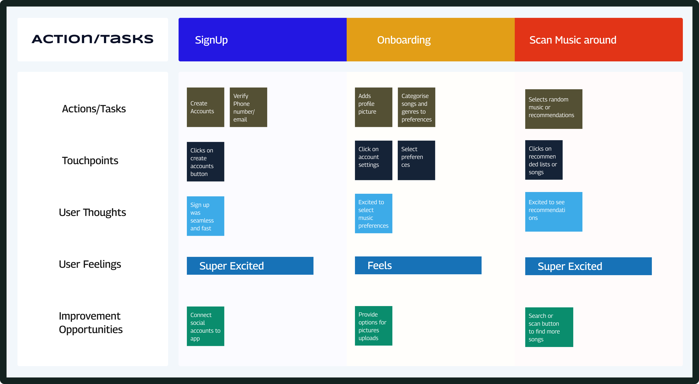
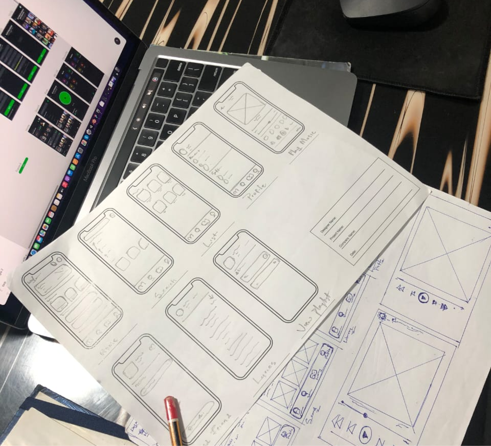
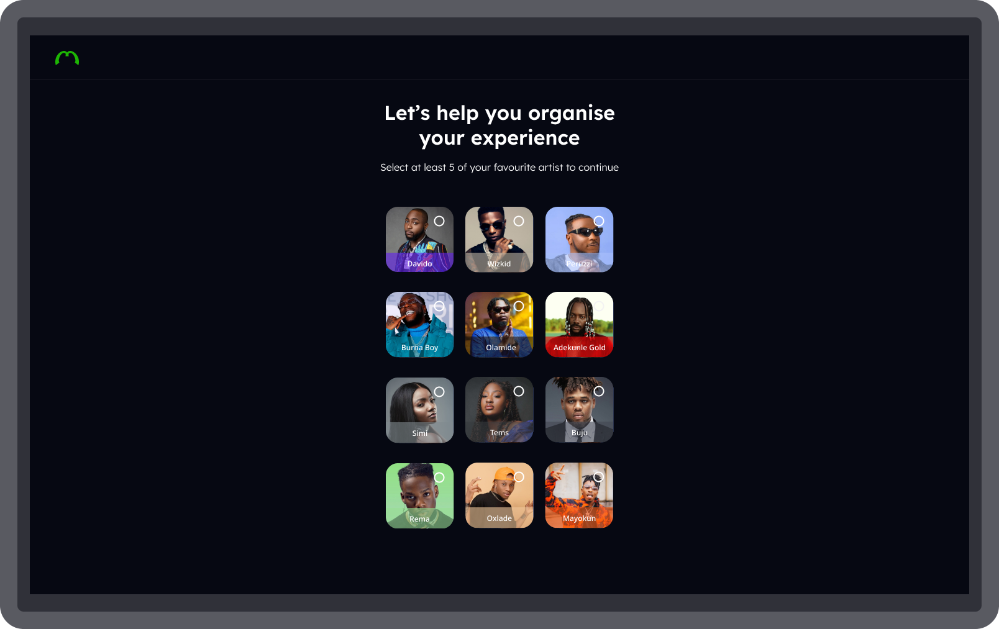
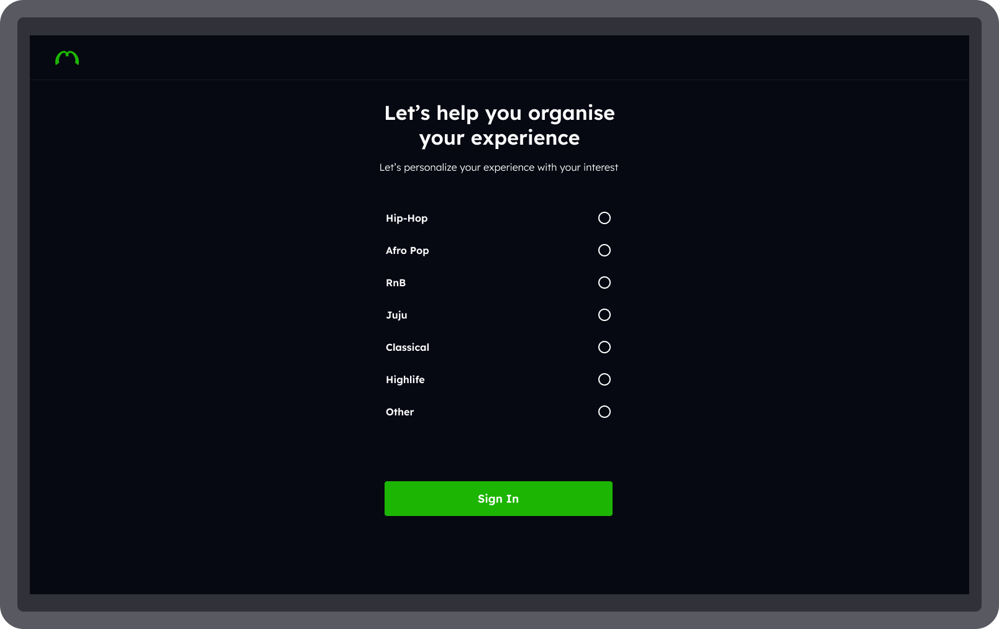
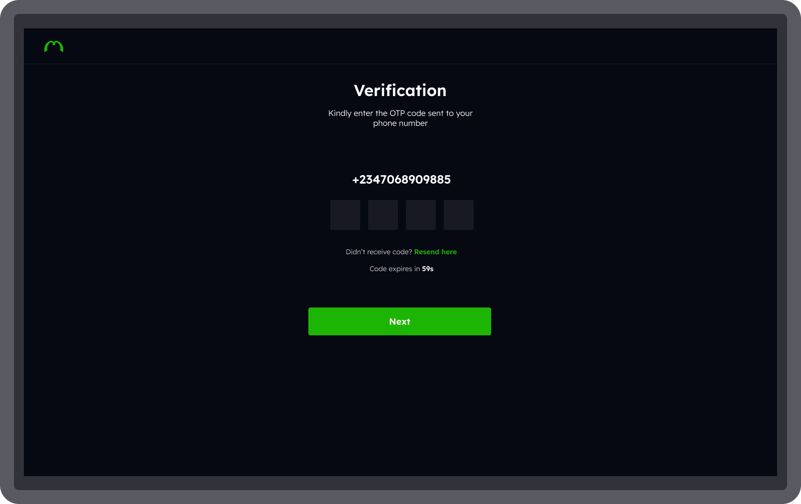
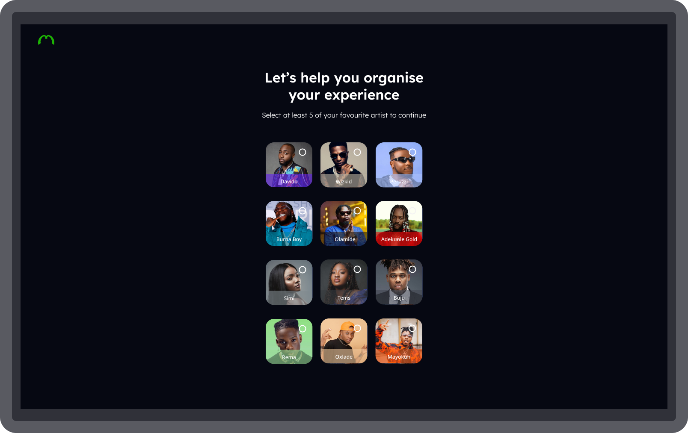
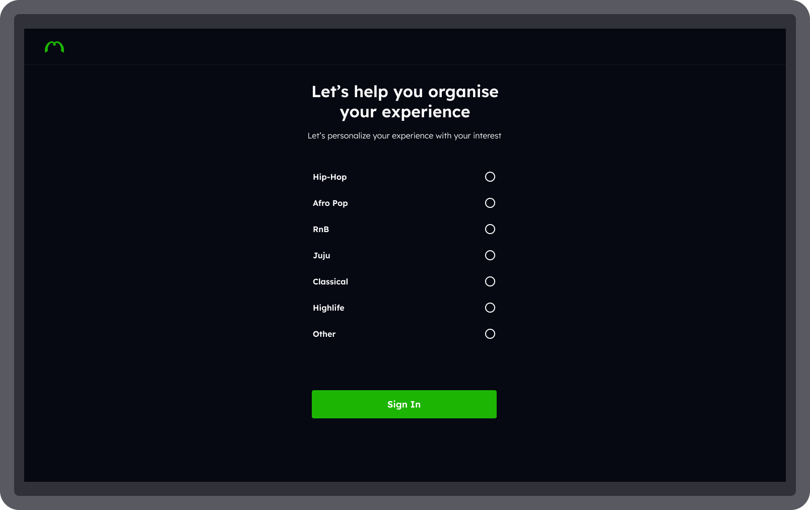
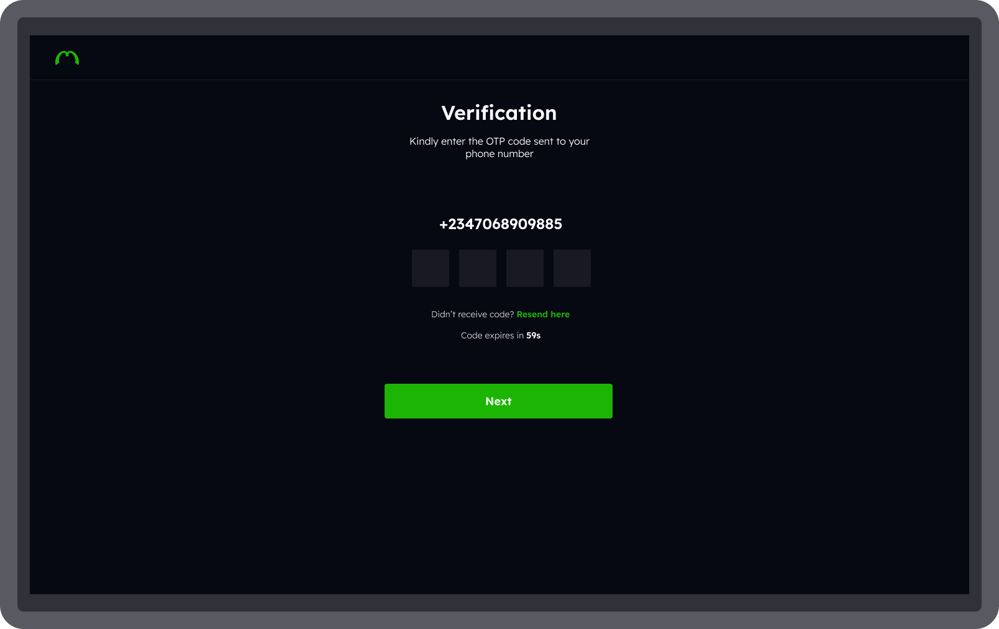

MUSIQ STREAMING APP
CROSS PLATFORM MUSIC APPLICATION STREAMING EXPERIENCE
My Role
Product Designer
Industry
Music


Introduction
Musiq is an mobile and desktop music streaming application that offers seamless streaming experience for users from different part of the world
BRIEF AND SCOPE
Music generally can be so emotional. People often use music as a means to communicate and express their emotions, feelings, and excitements either personally, or to other people. In as much as Music is widely appreciated worldwide and widely engaged with, most or few users lack the ability to share and listen to their favorite music with other people, an unsatisfying experience when listening to music
My Role
I was the Product Designer on this project. My roles was tasked to come out with a clear concept and approach of how the product can be functional, user friendly and have a good user conversion rate, through effective UX strategies
Design Process


Research Discovery/Insights Generated
Everyone appreciates music but not everyone loves it. Different people listen to music for different purposes. Some express how they feel, and communicate their feelings, while some only engage just for the listening experience. Having speaking 8 users to learn about their listening experiences, this research revealed two categories of users: Music Lovers and Music listeners
Painpoints gathered
I put together an understanding of the different pain points of the users gathered, from different participants I spoke to. Although, some of the participants made the same points, of which I had to put together
Aesthetics
- Unappealing user interfaces/experiences
Availaibility
- Absence of Lyrics to songs
- Absence of In App Library for listed features
Accessibility
- Unavailability of cross platform experience i.e Desktop
Screenshots of some feedbacks


Competitive Audit
To further validate the research frameworks, I conducted a preliminary competitive audit of other streaming platforms to better understand how they can shape the streaming experiences of their products and skimmed through user feedback and ratings on playstores to better understand user needs/wants. The goal was to use both the strengths and weakness of these platforms as an advantage, to connect both user and business goals
User Personas

Tombre Ebilafa
Female
 Lagos,Nigeria
Lagos,Nigeria
Interests
Singing, Outdoor Activities
Challenges
-
 Inability to find downloaded songs, or playlists
Inability to find downloaded songs, or playlists
-
Curated In-App Library that houses downloads and other listings
Wants
-
Absence of in-app lyrics or mixed lyrics
-
Lyrics feature that allows users to sing along seamlessly
I am a Music lover. Music is my life and I basically can’t go a day without listening to music, going through my playlist, and playing songs according to my mood. Music makes me happy and calm
Tosin Dorcas
Female
Lagos,Nigeria
Interests
Singing, Baking, Travelling
Challenges
-
External searching of a music/song artist from another source
-
Absence of in-app lyrics or mixed lyrics
Wants
-
In-app scan feature that scans for song/artist from an external source
-
Lyrics feature that allows users to sing along seamlessly
Music to me is life and it has been helpful for ages. Listening to music while working gives me more inspiration to think well and also helps my body feel more relaxed
Product Goals
Building products that solve varieties of user needs, most especially for a music streaming platform that shapes the listening experiences of its users through the implementation of core features, will continually encourage users to love music and stay consistent using such platforms - The goal of every product
User Goals
-
User Interface built with users in mind: Designing engaging interfaces with users in mind, using clear, and distinct elements across all design layouts - Designing for accessibility and inclusivity
-
Curated Library List: Staying organized is the goal of every user. A curated library that organizes the lists of songs created or saved by users, will help users find their needs at ease without experiencing any frustrations - Accessibility and easeness to features
-
In-App Extensive Features: Designing engaging interfaces with users in mind, using clear, and distinct elements across all design layouts Designing for accessibility and inclusivity
Business Goals
-
Premium Paid Features: In-app features are available only on premium subscriptions. This further generates revenue for product sustainability
-
In-App Ads: Ads available only on freemium subscriptions, which is another way through which business generates revenues for sustainability
user Journey
Tombri Ebi's journey revealed how easy it would be for users to find a music streaming platform that allows easier finding of music through a scan and stream feature.
Information Architecture
An end to end representation/workflow of the information architecture showing the walkthrough of one phase to other
Sketches/Paper Wireframes
Designs
An end to end representation/workflow of the information architecture showing the walkthrough of one phase to other
Onboardings
The onboarding helps users understand what can be done on the app and helps inform the users about the app's functions, benefits, and features expectations. For QUID, images were added to aid the content navigation for users while onboarding them.


.png)
.png)
Registration & Sign In
Users can proceed to sign in with their social account, or manually sign in with their details. For new users signing up, users can personalize their home screen with what they want or their interests, users are prompted to select at least 5 artists and the genre of music they want.
.png)
.png)
.png)
.png)
In App Navigations
The home page consists of the last played, Top artist recommendations, Trending songs and so much more will be shown while users scroll horizontally. The navigation bar consists of the Home, Search Page, My Lists, and Profile Page.
Since most users' challenges were the inability to curate their playlists or create new playlists, or the inability to find their downloaded songs, I created a library feature as part of the navigating icons for the app. Accessibility was critically considered while working on this project. Each list has different categories, with the names and numbers of items in each category. Users also have the option to create more categories. The library will aid users' navigation and also allow users to easily find their songs, or lists without delay and frustrations
.png)
.png)
.png)
.png)
The search page allows users to search for any songs or artists of their choice. I added a scan feature that allows users to scan any song they don't know who the artist is or the song title. Since this was a search page, the best position I brainstormed for the feature to be fit for easy accessibility by users is to add it near the search. While searching, users can see popular searches by people and also see other recommendations to personalize their experiences.
For the scan feature, users will be prompted to place their phone near a device like a speaker or a sound system in a moving vehicle, or anywhere the song they wish to know the song that is being played. The app scans the song and gives suggested results for the song.
.png)
Playing Experience
For each song users listen to, I added the share icons which give users the ability to share their favorite music, and also the invite feature, which also gives users the chance to invite friends and others, to share their listening experience. Also, users have the option to add a song to their favorite listen, download, and sing along. Below is the lyrics' feature. Users will drag up to see the lyrics of the song they are currently listening to.
.png)
.png)
.png)
.png)
PlayList
Users have the option to share their playlist and also have control over the privacy of the playlist they create, either to be set public for anyone to listen, to or restricted to private
.png)
.png)
.png)
.png)
 




